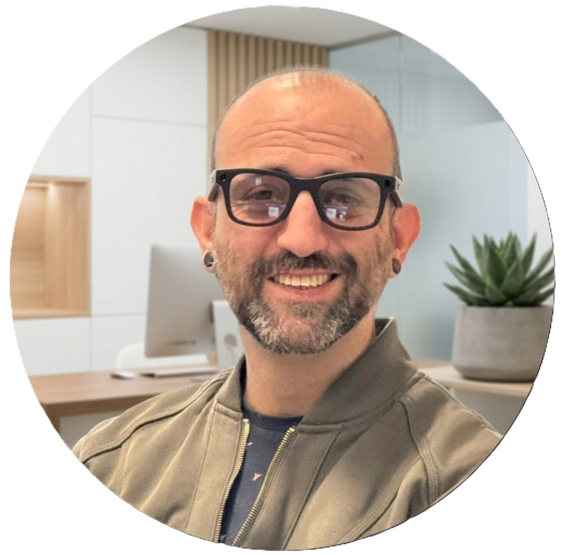

Fundador de Nodink Digital · Automatizaciones · IA · Diseño Web
Técnico de sistemas con más de 10 años en entornos tecnológicos, reconvertido en especialista en automatizaciones e inteligencia artificial para pymes. Construyo procesos que funcionan solos para que los negocios dejen de depender de la presencia constante de su dueño.

Soy José Alberto Delicado, fundador de Nodink Digital. Empecé como técnico de sistemas —redes, servidores Linux, infraestructura— y con los años fui incorporando diseño web, SEO, marketing digital y finalmente automatizaciones e inteligencia artificial. No llegué aquí por tendencia: llegué porque es donde el impacto real en negocios pequeños es mayor.
Hoy diseño sistemas que conectan las piezas de un negocio: captación de leads, respuestas automáticas, gestión de clientes, seguimiento de pedidos. Todo fluyendo sin que nadie tenga que intervenir cada vez que algo ocurre. Mi base técnica me permite construir soluciones que funcionan de verdad, no demos que impresionan en una reunión y fallan a la semana.
Trabajo con autónomos y pymes en Almansa y la provincia de Albacete que quieren digitalizar sus procesos sin complicaciones. También colaboro con agencias que necesitan un perfil técnico especializado en automatizaciones e IA para sus proyectos.
Fundador & Especialista en Automatizaciones e IA
Nodink Digital · Almansa, España · Híbrido
Diseñador Web & Automatizaciones
Javier Navalón Rico · Almansa, España · Híbrido
Técnico de Sistemas Informáticos
Trade Contract SL · Almansa, España · Presencial
01 · Automatización
El tiempo de gestión comercial se perdía en tareas repetitivas sin estandarizar.
Construí un dashboard integrado con la API de ChatGPT que genera, estandariza y prepara presupuestos sin intervención manual. Conecté el flujo con el CRM para que cada presupuesto quedara registrado automáticamente y el seguimiento no dependiera de recordarlo a mano.
→ Respuesta comercial inmediata · Cero variabilidad en el formato · Seguimiento automático
02 · Automatización
Los nuevos leads tardaban en entrar al sistema por la entrada manual de datos.
Desarrollé un sistema que captura tarjetas de contacto mediante OCR y vuelca los datos directamente en el CRM, sin teclear nada. Diseñé la lógica para que el contacto quedara categorizado y asignado a una secuencia de seguimiento de forma automática desde el primer momento.
→ Cero entrada manual · Lead al pipeline en segundos · Seguimiento activado al instante
03 · Inteligencia Artificial
La redacción y adaptación de documentos dependía de una sola persona y consumía horas que no sobraban.
Implementé un asistente de IA capaz de redactar, adaptar y revisar documentos según el contexto del cliente. Trabajé la ingeniería de prompts para que el output fuera preciso y usable directamente, sin revisión exhaustiva. El proceso quedó al alcance de cualquier miembro del equipo sin formación técnica.
→ De horas a minutos · Accesible para todo el equipo · Sin dependencia de perfil técnico
Fondo Europeo · Castilla-La Mancha
SEO, automatización, no-code / low-code, IA generativa, agentes IA, chatbots, CRM, landing pages, email marketing, Google Analytics, integración de sistemas.
I.E.S. Escultor José Luis Sánchez · Almansa
Redes, telecomunicaciones, sistemas operativos, administración de servidores.
Femxa
Desarrollo de páginas web, fundamentos de programación frontend.
I.E.S. Herminio Almendros
Electrotecnia, instalaciones, fundamentos técnicos.
30 minutos de llamada. Sin compromiso. Te digo exactamente qué se puede automatizar en tu negocio y cuánto tiempo recuperarías.